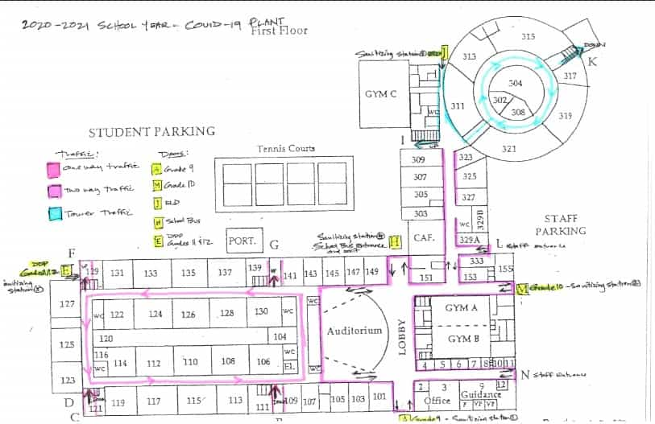

Since Covid-19 started right during my first year of high school, a lot of my time has been spent with online school. Some important things I can tell you though, are that instead of learning a bit of everything, you can pick which classes you want to do. The only requirement is the diploma, which has a list of classes you have to do to finish high school. Most of the requirements are basic classes like math and english, and some categories that you need one of the classes from. You also need to get 40 hours of community service, but that's pretty easy to do if you do a little bit every year. Another thing you should definitely do is get a good sense of time manegment and studying. This is going to help a lot with getting better marks and not being behind on assignments.
Picking which classes you can do means that you need to think ahead for what career you want in the future, and which classes you would need as prerequesites. If you wanted to stay with your friends, you would have to coordinate which classes you have with them. Or, you could just make your guidance councillor pick them all for you. Most often though, what you want to do is pick credits that you would need for the line of work you want. For example, if you want to become a doctor, you would need to start taking biology and organic chemistry. Basically, choose classes based on what you want to do.
Some other things to know are that you can have empty periods if you don't have any classes then, but that usually only happens during 12th grade if you start to run out of requirements for the career path you want. Lunch break can also be spent anywhere, as long as you get back by the end of the period, which allows for you to go to restaurants and things. Finding a good place to at lunch is also really important, as you would usually sit near your friends, either outside, or in the cafeteria. Finally, you should probably bring a map of the school with you, because the time between classes is only 5 minutes, and the school is pretty large.
